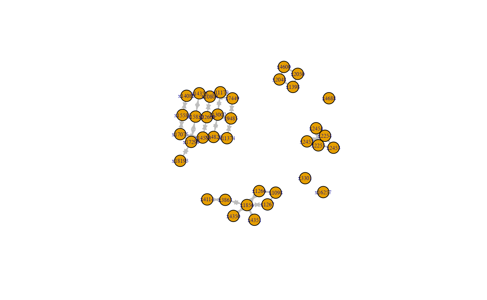
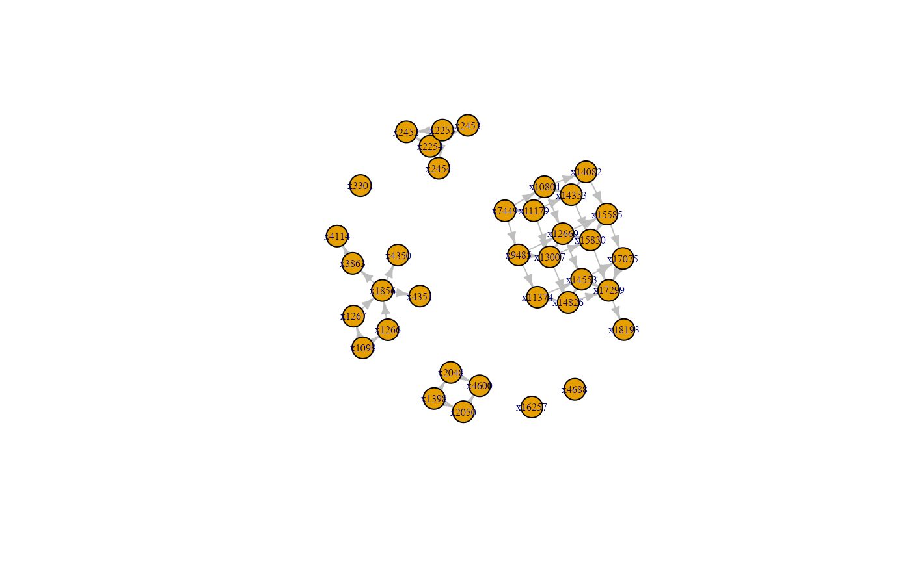
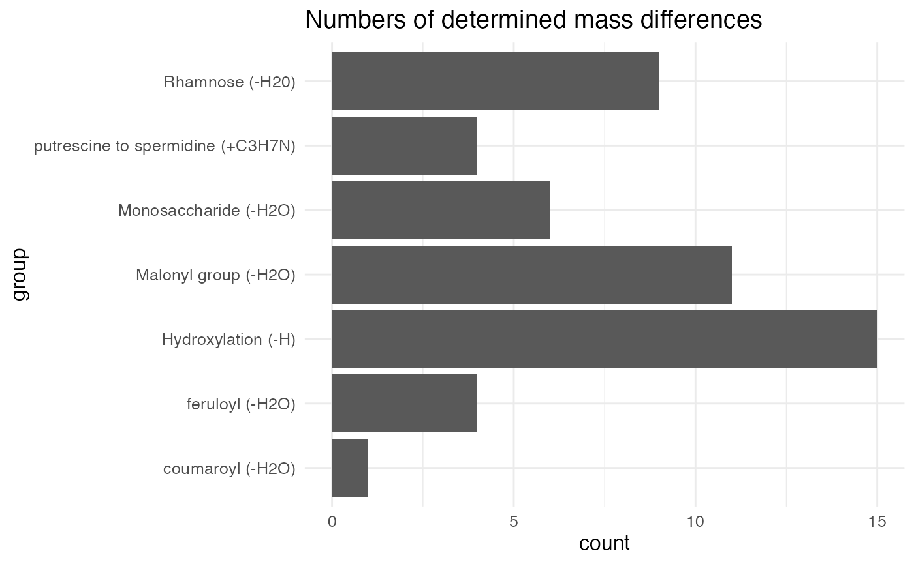
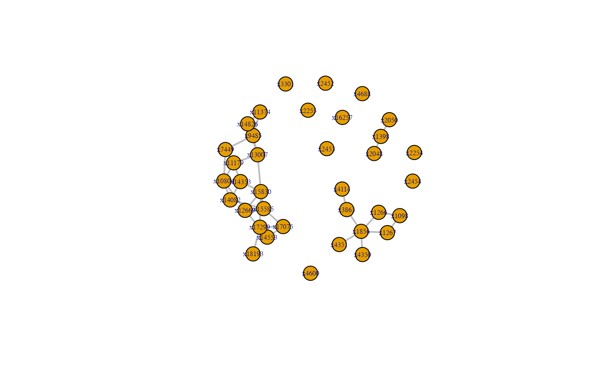

MetNet.RmdAbstract
A major bottleneck of mass spectrometry-based metabolomic
analysis is still the rapid detection and annotation of unknown
m/z features across biological matrices. Traditionally, the
annotation was done manually imposing constraints in
reproducibility and automatization. Furthermore, different
analysis tools are typically used at different steps of analyses
which requires parsing of data and changing of environments. I
present here MetNet, a novel R package,
that is compatible with the output of the
xcms/CAMERA suite and that uses the
data-rich output of mass spectrometry metabolomics to putatively
link features on their relation to other features in the data set.
MetNet uses both structural and quantitative
information of metabolomics data for network inference that will
guide metabolite annotation.
Among the main challenges in mass spectrometric metabolomic analysis
is the high-throughput analysis of metabolic features, their fast
detection and annotation. By contrast to the screening of known,
previously characterized, metabolic features in these data, the putative
annotation of unknown features is often cumbersome and requires a lot of
manual work, hindering the biological information retrieval of these
data. High-resolution mass spectrometric data is often very rich in
information content and metabolic conversions, and reactions can be
derived from structural properties of features (Breitling et al. 2006). In addition to that,
statistical associations between features (based on their intensity
values) can be a valuable resource to find co-synthesized or
co-regulated metabolites, which are synthesized in the same biosynthetic
pathways. Given that an analysis tool within the R
framework is still lacking that is integrating the two features of mass
spectrometric information commonly acquired with mass spectrometers (m/z
and intensity values), I developed MetNet to close this
gap. The MetNet package comprises functionalities to infer
network topologies from high-resolution mass spectrometry data.
MetNet combines information from both structural data
(differences in m/z values of features) and statistical associations
(intensity values of features per sample) to propose putative metabolic
networks that can be used for further exploration.
The idea of using high-resolution mass spectrometry data for network construction was first proposed in Breitling et al. (2006) and followed soon afterwards by a Cytoscape plugin, MetaNetter (Jourdan et al. 2007), that is based on the inference of metabolic networks on molecular weight differences and correlation (Pearson correlation and partial correlation).
Inspired by the paper of Marbach et al.
(2012) different algorithms for network were implemented in
MetNet to account for biases that are inherent in these
statistical methods, followed by the calculation of a consensus
adjacency matrix using the differently computed individual adjacency
matrices.
The two main functionalities of the package include the creation of adjacency matrices from structural properties, based on losses/addition of functional groups defined by the user, and statistical associations. Currently, the following statistical models are implemented to infer a statistical adjacency matrix: Least absolute shrinkage and selection operator (LASSO, L1-norm regression, (Tibshirani 1994)), Random Forest (Breiman 2001), Pearson and Spearman correlation (including partial and semipartial correlation, see Steuer (2006) for a discussion on correlation-based metabolic networks), correlation based on Gaussian Graphical Models (GGM, see Krumsiek et al. (2011);Benedetti et al. (2020) for the advantages of using GGM instead of Pearson and partial pearson correlation), context likelihood of relatedness (CLR, (Faith et al. 2007)), the algorithm for the reconstruction of accurate cellular networks (ARACNE, (Margolin et al. 2006)) and constraint-based structure learning (Bayes, (Scutari 2010)). Since all of these methods have advantages and disadvantages, the user has the possibility to select several of these methods, compute adjacency matrices from these models and create a consensus matrix from the different statistical frameworks.
After creating the statistical and structural adjacency matrices these two matrices can be combined to form a consensus matrix that has information from both structural and statistical properties of the data. This can be followed by network analyses (e.g. calculation of topological parameters), integration with other data sources (e.g. genomic information or transcriptomic data) and/or visualization.
Central to MetNet is the AdjacencyMatrix
class, derived from the SummarizedExperiment S4 class. The
AdjacencyMatrix host the adjacency matrices creates during
the different steps within the assays slot. They will
furthermore store information on the type of the
AdjacencyMatrix, i.e. if it was derived from
structural or statistical properties or if it
used the combined information from these layers (combine).
It also stores information if the information was
thresholded, e.g. by applying the rtCorrection
or threshold function. Furthermore, the
AdjacencyMatrix object stores information on if the graphs
are directed or undirected (within the directed slot).
MetNet is currently under active development. If you
discover any bugs, typos or develop ideas of improving
MetNet feel free to raise an issue via Github or send a mail to the
developer.
To install MetNet enter the following to the
R console
if (!requireNamespace("BiocManager", quietly = TRUE))
install.packages("BiocManager")
BiocManager::install("MetNet")Before starting with the analysis, load the MetNet
package. This will also load the required packages glmnet,
stabs, GENIE3, mpmi,
parmigene, Hmisc, ppcor and
bnlearn that are needed for functions in the statistical
adjacency matrix inference.
library(MetNet)The data format that is compatible with the MetNet
framework is a xcms/CAMERA output-like
matrix, where columns denote the different samples
and where
features are present. In such a matrix, information about the masses of
the features and quantitative information of the features (intensity or
concentration values) are needed. The information about the m/z values
has to be stored in a vector of length
in the column "mz".
MetNet does not impose any requirements for data
normalization, filtering, etc. However, the user has to make sure that
the data is properly preprocessed. These include division by internal
standard, log2 or vsn transformation, noise
filtering, removal of features that do not represent mass
features/metabolites, removal of isotopes, etc.
We will load here the object x_test that contains m/z
values (in the column "mz"), together with the
corresponding retention time (in the column "rt") and
intensity values. We will use here the object x_test for
guidance through the workflow of MetNet.
The function structural will create an
AdjacencyMatrix object of type
structural containing the adjacency matrices based on
structural properties (m/z values) of the features.
The function expects a matrix with a column "mz" that
contains the mass information of a feature (typically the m/z value).
Furthermore, structural takes a data.frame
object as argument transformation with the
colnames "mass" and additional columns
(e.g. "group", "formula" or
"rt"). structural looks for transformations
(in the sense of additions/losses of functional groups mediated by
biochemical, enzymatic reactions) in the data using the mass
information.
Following the work of Breitling et al. (2006) and Jourdan et al. (2007), molecular weight difference wX is defined by
where wA is the molecular weight of substrate A, and wB is the molecular weight of product B (typically, m/z values will be used as a proxy for the molecular weight since the molecular weight is not directly derivable from mass spectrometric data). As exemplified in Jourdan et al. (2007), specific enzymatic reactions refer to specific changes in the molecular weight, e.g. carboxylation reactions will result in a mass difference of 43.98983 (molecular weight of CO2) between metabolic features.
The search space for these transformation is adjustable by the
transformation argument in structural allowing
to look for specific enzymatic transformations. Hereby,
structural will take into account the ppm
value, to adjust for inaccuracies in m/z values due to technical reasons
according to the formula
with mexp the experimentally determined m/z value and
mcalc the calculated accurate mass of a molecule. Within the
function, a lower and upper range is calculated depending on the
supplied ppm value, differences between the m/z feature
values are calculated and matched against the "mass"es of
the transformation argument. If any of the additions/losses
defined in transformation is found in the data, it will be
reported as an (unweighted) connection in the assay
"binary" of the returned AdjacencyMatrix
object.
Together with this assay, additional character adjacency
matrices can be written to the assay slot of the
AdjacencyMatri object. E.g. we can write the type of
connection/transformation (derived e.g. from the column
"group" in the transformation object) as a
character matrix to the assay "group" by setting
var = "group".
Before creating the structural
AdjacencyMatrix, one must define the search space, i.e. the
transformation that will be looked for in the mass spectrometric data,
by creating here the transformations object.
## define the search space for biochemical transformation
transformations <- rbind(
c("Hydroxylation (-H)", "O", 15.9949146221, "-"),
c("Malonyl group (-H2O)", "C3H2O3", 86.0003939305, "+"),
c("D-ribose (-H2O) (ribosylation)", "C5H8O4", 132.0422587452, "-"),
c("C6H10O6", "C6H10O6", 178.0477380536, "-"),
c("Rhamnose (-H20)", "C6H10O4", 146.057910, "-"),
c("Monosaccharide (-H2O)", "C6H10O5", 162.0528234315, "-"),
c("Disaccharide (-H2O) #1", "C12H20O10", 324.105649, "-"),
c("Disaccharide (-H2O) #2", "C12H20O11", 340.1005614851, "-"),
c("Trisaccharide (-H2O)", "C18H30O15", 486.1584702945, "-"),
c("Glucuronic acid (-H2O)", "C6H8O6", 176.0320879894, "?"),
c("coumaroyl (-H2O)", "C9H6O2", 146.0367794368, "?"),
c("feruloyl (-H2O)", "C9H6O2OCH2", 176.0473441231, "?"),
c("sinapoyl (-H2O)", "C9H6O2OCH2OCH2", 206.0579088094, "?"),
c("putrescine to spermidine (+C3H7N)", "C3H7N", 57.0578492299, "?"))
## convert to data frame
transformations <- data.frame(
group = transformations[, 1],
formula = transformations[, 2],
mass = as.numeric(transformations[, 3]),
rt = transformations[, 4])The function structural will then check for those m/z
differences that are stored in the column "mass" in the
object transformations. To create the
AdjacencyMatrix object derived from these structural
information we enter
struct_adj <- structural(x = x_test, transformation = transformations,
var = c("group", "formula", "mass"), ppm = 10)in the R console.
As we set var = c("group", "formula", "mass"), the
AdjacencyMatrix object will contain the assays
"group", "formula", and "mass"
that store the character adjacency matrices with the
information defined in the columns of transformations.
By default, the structural AdjacencyMatrix
object and the contained adjacency matrices are undirected (the argument
in structural is set to directed = FALSE by
default; i.e. the matrices are symmetric). MetNet, however,
also allows to include the information on the directionality of the
transformation (e.g. to distinguish between additions and losses). This
behaviour can be specified by setting directed = TRUE:
struct_adj_dir <- structural(x = x_test, transformation = transformations,
var = c("group", "formula", "mass"), ppm = 10, directed = TRUE)In the following we will visualize the results from the undirected and directed structural network.
We will set the mode of the igraph object to
"directed" in both cases to make the distinction between
the returned outputs of structural for setting
directed = FALSE and directed = TRUE.
Alternatively, we could also set the mode for the first
igraph object (using the undirected output of
structural) to "undirected" which results in
an igraph object where the directionality of the edges is
not retained.
g_undirected <- igraph::graph_from_adjacency_matrix(
assay(struct_adj, "binary"), mode = "directed", weighted = NULL)
plot(g_undirected, edge.width = 1, edge.arrow.size = 0.5,
vertex.label.cex = 0.5, edge.color = "grey")
g_directed <- igraph::graph_from_adjacency_matrix(
assay(struct_adj_dir, "binary"), mode = "directed", weighted = NULL)
plot(g_directed, edge.width = 1, edge.arrow.size = 0.5,
vertex.label.cex = 0.5, edge.color = "grey")
The retention time will differ depending on the chemical group added,
e.g. an addition of a glycosyl group will usually result in a lower
retentiom time in reverse-phase chromatography. This information can be
used in refining the adjacency matrix derived from the structural
matrix. The rtCorrection function does this check, if the
predicted transformations correspond to the expected retention time
shift, in an automated fashion. It requires information about the
expected retention time shift in the data.frame passed to
the transformation argument (in the "rt"
column). Within this column, information about retention time shifts is
encoded by "-", "+" and "?",
which means the feature with higher m/z value has lower, higher or
unknown retention time than the feature with the lower m/z value. The
values for m/z and retention time will be taken from the object passed
to the x argument. In case there is a discrepancy between
the transformation and the retention time shift, the adjacency matrix at
the specific position will be set to 0. rtCorrection will
return the an AdjacencyMatrix object with updated adjacency
matrices ("binary" and the additional
character adjacecny matrices).
To account for retention time shifts we enter
struct_adj <- rtCorrection(am = struct_adj, x = x_test,
transformation = transformations, var = "group")in the R console. The character "group"
defined with var will serve here as the link between the
assay "group" and the column in transformation
to calculate the retention time discrepancies between feature pairs.
For data analysis a data.frame can be generated from
AdjacencyMatrix objects by applying
as.data.frame(). Further filtering displays only
feature-pairs which were matched to a transformation.
struct_df <- as.data.frame(struct_adj)
struct_df <- struct_df[struct_df$binary == 1, ]Some overview on the mass-difference distribution of the data can be
observed using the mz_summary function. The number of
determined mass differences can be displayed by using the
mz_vis function.
mz_sum <- mz_summary(struct_adj, var = "group")
mz_vis(mz_sum, var = "group")
For larger data-sets, also a filter can be applied to
visualize mass-difference above a defined threshold. A filter can be
applied, by filter. Since the maximum count of any mass
difference in struct_adj is 4, a filter of 5
results in 0 mass differences.
mz_summary(struct_adj, filter = 4)## group formula count
## 1 Hydroxylation (-H) O 15
## 2 Malonyl group (-H2O) C3H2O3 11
## 3 Monosaccharide (-H2O) C6H10O5 6
## 4 Rhamnose (-H20) C6H10O4 9
## 6 feruloyl (-H2O) C9H6O2OCH2 4
## 7 putrescine to spermidine (+C3H7N) C3H7N 4
mz_summary(struct_adj, filter = 5)## group formula count
## 1 Hydroxylation (-H) O 15
## 2 Malonyl group (-H2O) C3H2O3 11
## 3 Monosaccharide (-H2O) C6H10O5 6
## 4 Rhamnose (-H20) C6H10O4 9The AdjacencyMatrix class allows storing further
information on the features as putative annotations, database
identifier, SMILES, etc. using rowData(). A
data.frame containing the same rownames as the
test data needs to be provided. The columns can store different
information as annotations, identifier, etc. We will load the
x_annotation file, which contains an example annotation and
other identifier for feature x1856. All the other features
contain NAs in corresponding columns.
data("x_annotation", package = "MetNet")
x_annotation <- as.data.frame(x_annotation)
## add annotations to the structural AdjacencyMatrix object
rowData(struct_adj) <- x_annotation
## display annotation for the feature "1856"
rowData(struct_adj)["x1856", ]## DataFrame with 1 row and 11 columns
## database_mz database_identifier chemical_formula smiles
## <character> <character> <character> <character>
## x1856 308.2 N-caffeoylspermidine C16H25N3O3 C=1(C=C(C(=CC1)O)O)/..
## inchi inchikey metabolite_identification
## <character> <character> <character>
## x1856 InChI=1S/C16H25N3O3/.. AZSUJBAOTYNFDE-FNORW.. NA
## fragmentations modifications charge database
## <character> <character> <character> <character>
## x1856 NA NA 1 NAMetNet can also incorporate information from spectral
similarity to the structural AdjacencyMatrix.
addSpectralSimilarity uses a list of spectral
similarity matrices
(e.g. that were created using functionality from the
Spectra package) and adds them to the
structural AdjacencyMatrix. Column- and
rownames of the spectral similarity matrix should match to the
respective feature names in the respective MS1 data
(i.e. colnames/rownames in the structural
AdjacencyMatrix)
The function will create weighted adjacency matrices using the spectral similarity methods defined by names of the list-entries (e.g. “ndotproduct”).
In the following example, we load a toy MS2 dataset, represented as
Spectra object. This object stores unique id’s, matching to
the respective MS1 data. We will then create a spectral similarity
adjacency matrices using the normalized dotproduct and add them to the
previously created “structural” AdjacencyMatrix.
# required for ndotproduct calculus
library(MsCoreUtils)##
## Attaching package: 'MsCoreUtils'## The following object is masked from 'package:MatrixGenerics':
##
## colCounts## The following object is masked from 'package:matrixStats':
##
## colCounts## The following object is masked from 'package:stats':
##
## smooth## Loading required package: BiocParallel##
## Attaching package: 'Spectra'## The following object is masked from 'package:MsCoreUtils':
##
## entropy
## create spectral similarity matrix
f <- system.file("spectra_matrix/ms2_test.RDS", package = "MetNet")
sps_sub <- readRDS(f)
adj_spec <- Spectra::compareSpectra(sps_sub, FUN = ndotproduct)
colnames(adj_spec) <- sps_sub$id
rownames(adj_spec) <- sps_sub$id
spect_adj <- addSpectralSimilarity(am_structural = struct_adj,
ms2_similarity = list("ndotproduct" = adj_spec))Furthermore, the spectral similarity matrix can be thresholded using
the function threshold. The user needs to define whether
the data should be thresholded or not. If multiple methods have been
used to generate the spectral matrices, different threshold parameters
can be defined (for detailed description see thresholding of
statistical).
## the assayNames in spect_adj are used to define the filter criteria
assayNames(spect_adj)## [1] "binary" "group" "formula" "mass" "ndotproduct"
## return edges with normalized dotproduct > 0.10
args_thr <- list(filter = "ndotproduct > 0.1")
## return edges with normalized dotproduct > 0.10, even if no mass-difference
## was detected between pairs of features
args_thr <- list(filter = "ndotproduct > 0.1 | binary == 1 & is.na(ndotproduct)")
## pass the filtering criteria to the args argument and set type to "threshold"
spect_adj_thr <- threshold(am = spect_adj, type = "threshold",
args = args_thr)statistical
The function statistical will create an
AdjacencyMatrix object of type statistical
containing the adjacency matrices based on statistical associations. The
function will create
weighted adjacency matrices using the statistical models defined by the
model argument. Currently, the following models are
available: LASSO (using stabs, (Hofner, Boccuto, and Göker 2015; Thomas et al.
2017)), Random Forest (using GENIE3, CLR, ARACNE
(the two latter using the package mpmi to calculate Mutual
Information using a nonparametric bias correction by Bias Corrected
Mutual Information, and the functions clr and
aracne.a from the parmigene package), Pearson
and Spearman correlation (based on the psych package),
partial and semipartial Pearson and Spearman correlation (using the
ppcor package), correlation based on Gaussian graphical
models (using the GeneNet package (Schäfer and Strimmer 2005)) and score-based
structure learning returning the strength of the probabilistic
relationships of the arcs of a Bayesian network, as learned from
bootstrapped data (using the boot.strength with the Tabu
greedy search as default from the bnlearn package (Scutari 2010)).
For further information on the different models take a look on the
respective help pages of lasso, randomForest,
clr, aracne, correlation and/or
bayes. Arguments that are accepted by the respective
underlying functions can be passed directly to the
statistical function. In addition, arguments that are
defined in the functions lasso, randomForest,
clr, aracne, correlation and/or
bayes can be passed to the functions.
threshold
From the statistical AdjacencyMatrix object
the function threshold will create an
AdjacencyMatrix object with the derived unweighted
adjacency matrix from the weighted adjacency matrices unifying the
information present from all statistical models. This unweighted
adjacency matrix is stored in the assay "consensus".
In the following example, we will create a list of unweighted adjacency matrices using Pearson and Spearman correlation using the intensity values as input data.
x_int <- x_test[, 3:ncol(x_test)] |>
as.matrix()
stat_adj <- statistical(x_int, model = c("pearson", "spearman"))## [1] "pearson finished."
## [1] "spearman finished."The reasoning behind this step is to circumvent disadvantages arising
from each model and creating a statistically reliable topology that
reflects the actual metabolic relations. threshold returns
an unweighted adjacency matrix with connections inferred from the
respective models (in the "consensus" assay).
There are four different types implemented how the unweighted
adjacency matrix can be created: threshold,
top1, top2, mean.
For type = "threshold", threshold values have to be
defined in the args argument for the respective statistical
model within the list entry filter. Values above or below
these thresholds in each respective weighted adjacency matrix will be
reported as present (1) or absent (0) in the returned unweighted
adjacency matrix.
For the other three types (top1, top2,
mean) the ranks per statistical model will be calculated
and from each respective link the top1, top2 or mean rank across
statistical models will be calculated (cf. (Hase
et al. 2013)). The top n unique ranks (defined by the entry
n in args) will be returned as links in the
unweighted consensus adjacency matrix.
We will create here for all ways the thresholded
AdjacencyMatrix objects of type statistical
containing the consensus adjacency matrix.
## type = "threshold"
## the assayNames in stat_adj are used to define the filter criteria
assayNames(stat_adj)## [1] "pearson_coef" "pearson_pvalue" "spearman_coef" "spearman_pvalue"
## return edges with positive Pearson correlation coefficients > 0.95
args_thr <- list(filter = "pearson_coef > 0.95")
## return edges with positive Spearman correlation coefficients > 0.95
args_thr <- list(filter = "spearman_coef > 0.95")
## return edges with absolute Pearson correlation coefficients > 0.95 and
## associated p-values <= 0.05
args_thr <- list(filter = "abs(pearson_coef) > 0.95 & pearson_pvalue <= 0.05")
## return edges with absolute Pearson OR Spearman correlation coefficients > 0.95
args_thr <- list(filter = "abs(pearson_coef) > 0.95 | abs(spearman_coef) > 0.95")
## return edges with absolute Pearson AND Spearman correlation coefficients > 0.95
args_thr <- list(filter = "abs(pearson_coef) > 0.95 & abs(spearman_coef) > 0.95")
## pass the filtering criteria to the args argument and set type to "threshold"
stat_adj_thr <- threshold(am = stat_adj, type = "threshold",
args = args_thr)
## alternatively, use the types "top1", "top2", "mean"
## retrieve the feature pairs which have the 100 highest coefficients
args_top <- list(n = 100)
## type = "top1"
stat_adj_top1 <- threshold(am = stat_adj, type = "top1",
args = args_top)
## type = "top2"
stat_adj_top2 <- threshold(am = stat_adj, type = "top2",
args = args_top)
## type = "mean"
stat_adj_mean <- threshold(am = stat_adj, type = "mean",
args = args_top)After creating the structural and
statistical AdjacencyMatrix objects, the two
objects are combined. The function combine will combine
these two objects and create an AdjacencyMatrix object of
type combine. The function accepts the arguments
am_structural and am_statistical for the
respective AdjacencyMatrix objects. Please note that for
am_structural the AdjacencyMatrix obtained via
structural or rtCorrection can be used, while
for am_statistical the AdjacencyMatrix from
threshold has to be used. The edges that are present both
in the binary assay and the consensus assay
will be reported within the combine_binary assay in a
combine AdjacencyMatrix object. If there are
additional assays in the AdjacencyMatrix of type
structural these matrices will be stored in the
AdjacencyMatrix of type combine and will
contain the edges that are supported by the combine_binary
adjacency matrix (the other edges are set to ““).
We will use here the thresholded statistical
AdjacencyMatrix from type = "mean" to combine
it with the structural AdjacencyMatrix,
struct_adj:
comb_adj <- combine(am_structural = struct_adj, am_statistical = stat_adj_mean)We can also combine the statistical
AdjacencyMatrix with the structural
AdjacencyMatrix spect_adj_thr, based on the
thresholded spectral similarity values.
comb_spect_adj <- combine(am_structural = spect_adj_thr,
am_statistical = stat_adj_mean)To display the created consensus adjacency matrix, existing
visualization tools available in the R framework can be
employed or any other visualization tool after exporting the consensus
matrix as a text file. In this example, we will use the
igraph (Csardi and Nepusz
2006) package to visualize the adjacency matrix.
We use here the assay "combine_binary" from the
AdjacencyMatrix of type combine and pass it to
the graph_from_adjacency_matrix function:
adj <- assay(comb_adj, "combine_binary")
g <- igraph::graph_from_adjacency_matrix(adj, mode = "undirected")
plot(g, edge.width = 2, vertex.label.cex = 0.5, edge.color = "grey")
Ab initio network inferred from structural and quantitative mass spectrometry data. Vertices are connected that are separated by given metabolic transformation and statistical association.
Furthermore, the network can be analysed by network analysis
techniques (topological parameters such as centrality, degree,
clustering indices) that are implemented in different packages in
R (e.g. igraph or sna) or other
software tools outside of the R environment.
All software and respective versions to build this vignette are listed here:
## R version 4.4.1 (2024-06-14)
## Platform: aarch64-apple-darwin20
## Running under: macOS Sonoma 14.5
##
## Matrix products: default
## BLAS: /Library/Frameworks/R.framework/Versions/4.4-arm64/Resources/lib/libRblas.0.dylib
## LAPACK: /Library/Frameworks/R.framework/Versions/4.4-arm64/Resources/lib/libRlapack.dylib; LAPACK version 3.12.0
##
## locale:
## [1] en_US.UTF-8/en_US.UTF-8/en_US.UTF-8/C/en_US.UTF-8/en_US.UTF-8
##
## time zone: Europe/Berlin
## tzcode source: internal
##
## attached base packages:
## [1] stats4 stats graphics grDevices utils datasets methods
## [8] base
##
## other attached packages:
## [1] Spectra_1.15.11 BiocParallel_1.39.0
## [3] MsCoreUtils_1.17.0 MetNet_1.23.0
## [5] SummarizedExperiment_1.35.1 Biobase_2.65.0
## [7] GenomicRanges_1.57.1 GenomeInfoDb_1.41.1
## [9] IRanges_2.39.1 MatrixGenerics_1.17.0
## [11] matrixStats_1.3.0 S4Vectors_0.43.1
## [13] BiocGenerics_0.51.0 knitr_1.48
## [15] BiocStyle_2.33.1
##
## loaded via a namespace (and not attached):
## [1] tidyselect_1.2.1 psych_2.4.6.26 farver_2.1.2
## [4] dplyr_1.1.4 fastmap_1.2.0 digest_0.6.36
## [7] lifecycle_1.0.4 cluster_2.1.6 ProtGenerics_1.37.1
## [10] magrittr_2.0.3 compiler_4.4.1 rlang_1.1.4
## [13] sass_0.4.9 tools_4.4.1 igraph_2.0.3
## [16] utf8_1.2.4 yaml_2.3.9 S4Arrays_1.5.4
## [19] labeling_0.4.3 htmlwidgets_1.6.4 mnormt_2.1.1
## [22] DelayedArray_0.31.8 abind_1.4-5 withr_3.0.0
## [25] purrr_1.0.2 desc_1.4.3 grid_4.4.1
## [28] fansi_1.0.6 colorspace_2.1-0 ggplot2_3.5.1
## [31] MASS_7.3-60.2 scales_1.3.0 cli_3.6.3
## [34] rmarkdown_2.27 crayon_1.5.3 ragg_1.3.2
## [37] generics_0.1.3 rstudioapi_0.16.0 httr_1.4.7
## [40] cachem_1.1.0 bnlearn_4.9.4 zlibbioc_1.51.1
## [43] GENIE3_1.27.0 parallel_4.4.1 GeneNet_1.2.16
## [46] BiocManager_1.30.23 XVector_0.45.0 vctrs_0.6.5
## [49] Matrix_1.7-0 jsonlite_1.8.8 bookdown_0.40
## [52] clue_0.3-65 parmigene_1.1.0 systemfonts_1.1.0
## [55] longitudinal_1.1.13 jquerylib_0.1.4 tidyr_1.3.1
## [58] glue_1.7.0 pkgdown_2.1.0 stabs_0.6-4
## [61] codetools_0.2-20 gtable_0.3.5 UCSC.utils_1.1.0
## [64] munsell_0.5.1 tibble_3.2.1 pillar_1.9.0
## [67] htmltools_0.5.8.1 GenomeInfoDbData_1.2.12 R6_2.5.1
## [70] textshaping_0.4.0 evaluate_0.24.0 lattice_0.22-6
## [73] highr_0.11 corpcor_1.6.10 bslib_0.7.0
## [76] MetaboCoreUtils_1.13.0 fdrtool_1.2.17 SparseArray_1.5.21
## [79] nlme_3.1-164 xfun_0.46 fs_1.6.4
## [82] pkgconfig_2.0.3The list of transformations is taken from Breitling et al. (2006). The numerical m/z values were calculated by using the structural formula and the Biological Magnetic Resonance Data Bank web tool.
transformations <- rbind(
c("Alanine", "C3H5NO", "71.0371137878"),
c("Arginine", "C6H12N4O", "156.1011110281"),
c("Asparagine", "C4H6N2O2", "114.0429274472"),
c("Guanosine 5-diphosphate (-H2O)", "C10H13N5O10P2", "425.0137646843"),
c("Guanosine 5-monophosphate (-H2O)", "C10H12N5O7P", "345.0474342759"),
c("Guanine (-H)", "C5H4N5O", "150.0415847765"),
c("Aspartic acid", "C4H5NO3", "115.0269430320"),
c("Guanosine (-H2O)", "C10H11N5O4", "265.0811038675"),
c("Cysteine", "C3H5NOS", "103.0091844778"),
c("Deoxythymidine 5'-diphosphate (-H2O)", "C10H14N2O10P2", "384.01236770"),
c("Cystine", "C6H10N2O3S2", "222.0132835777"),
c("Thymidine (-H2O)", "C10H12N2O4", "224.0797068840"),
c("Glutamic acid", "C5H7NO3", "129.0425930962"),
c("Thymine (-H)", "C5H5N2O2", "125.0351024151"),
c("Glutamine", "C5H8N2O2", "128.0585775114"),
c("Thymidine 5'-monophosphate (-H2O)", "C10H13N2O7P", "304.0460372924"),
c("Glycine", "C2H3NO", "57.0214637236"),
c("Uridine 5'-diphosphate (-H2O)", "C9H12N2O11P2", "385.9916322587"),
c("Histidine", "C6H7N3O", "137.0589118624"),
c("Uridine 5'-monophosphate (-H2O)", "C9H11N2O8P", "306.0253018503"),
c("Isoleucine", "C6H11NO", "113.0840639804"),
c("Uracil (-H)", "C4H3N2O2", "111.0194523509"),
c("Leucine", "C6H11NO", "113.0840639804"),
c("Uridine (-H2O)", "C9H10N2O5", "226.0589714419"),
c("Lysine", "C6H12N2O", "128.0949630177"),
c("Acetylation (-H)", "C2H3O2", "59.0133043405"),
c("Methionine", "C5H9NOS", "131.0404846062"),
c("Acetylation (-H2O)", "C2H2O", "42.0105646863"),
c("Phenylalanine", "C9H9NO", "147.0684139162"),
c("C2H2", "C2H2", "26.0156500642"),
c("Proline", "C5H7NO", "97.0527638520"),
c("Carboxylation", "CO2", "43.9898292442"),
c("Serine", "C3H5NO2", "87.0320284099"),
c("CHO2", "CHO2", "44.9976542763"),
c("Threonine", "C4H7NO2", "101.0476784741"),
c("Condensation/dehydration", "H2O", "18.0105646863"),
c("Tryptophan", "C11H10N2O", "186.0793129535"),
c("Diphosphate", "H3O6P2", "160.9404858489"),
c("Tyrosine", "C9H9NO2", "163.0633285383"),
c("Ethyl addition (-H2O)", "C2H4", "28.0313001284"),
c("Valine", "C5H9NO", "99.0684139162"),
c("Formic Acid (-H2O)", "CO", "27.9949146221"),
c("Acetotacetate (-H2O)", "C4H4O2", "84.0211293726"),
c("Glyoxylate (-H2O)", "C2O2", "55.9898292442"),
c("Acetone (-H)", "C3H5O", "57.0340397826"),
c("Hydrogenation/dehydrogenation", "H2", "2.0156500642"),
c("Adenylate (-H2O)", "C10H12N5O6P", "329.0525196538"),
c("Hydroxylation (-H)", "O", "15.9949146221"),
c("Biotinyl (-H)", "C10H15N2O3S", "243.0803380482"),
c("Inorganic phosphate", "P", "30.9737615100"),
c("Biotinyl (-H2O)", "C10H14N2O2S", "226.0775983940"),
c("Ketol group (-H2O)", "C2H2O", "42.0105646863"),
c("Carbamoyl P transfer (-H2PO4)", "CH2ON", "44.0136386915"),
c("Methanol (-H2O)", "CH2", "14.0156500642"),
c("Co-enzyme A (-H)", "C21H34N7O16P3S", "765.0995583014"),
c("Phosphate", "HPO3", "79.9663304084"),
c("Co-enzyme A (-H2O)", "C21H33N7O15P3S", "748.0968186472"),
c("Primary amine", "NH2", "16.0187240694"),
c("Glutathione (-H2O)", "C10H15N3O5S", "289.0732412976"),
c("Pyrophosphate", "PP", "61.9475230200"),
c("Isoprene addition (-H)", "C5H7", "67.0547752247"),
c("Secondary amine", "NH", "15.0108990373"),
c("Malonyl group (-H2O)", "C3H2O3", "86.0003939305"),
c("Sulfate (-H2O)", "SO3", "79.9568145563"),
c("Palmitoylation (-H2O)", "C16H30O", "238.2296655851"),
c("Tertiary amine", "N", "14.0030740052"),
c("Pyridoxal phosphate (-H2O)", "C8H8NO5P", "229.0140088825"),
c("C6H10O5", "C6H10O5", "162.0528234315"),
c("Urea addition (-H)", "CH3N2O", "59.0245377288"),
c("C6H10O6", "C6H10O6", "178.0477380536"),
c("Adenine (-H)", "C5H4N5", "134.0466701544"),
c("D-ribose (-H2O) (ribosylation)", "C5H8O4", "132.0422587452"),
c("Adenosine (-H2O)", "C10H11N5O3", "249.0861892454"),
c("Disaccharide (-H2O) #1", "C12H20O10", "324.105649"),
c("Disaccharide (-H2O) #2", "C12H20O11", "340.1005614851"),
c("Adenosine 5'-diphosphate (-H2O)", "C10H13N5O9P2", "409.0188500622"),
c("Glucose-N-phosphate (-H2O)", "C6H11O8P", "242.0191538399"),
c("Adenosine 5'-monophosphate (-H2O)", "C10H12N5O6P", "329.0525196538"),
c("Glucuronic acid (-H2O)", "C6H8O6", "176.0320879894"),
c("Cytidine 5'-diphosphate (-H2O)", "C9H13N3O10P2", "385.0076166739"),
c("Monosaccharide (-H2O)", "C6H10O5", "162.0528234315"),
c("Cytidine 5'-monophsophate (-H2O)", "C9H12N3O7P", "305.0412862655"),
c("Trisaccharide (-H2O)", "C18H30O15", "486.1584702945"),
c("Cytosine (-H)", "C4H4N3O", "110.0354367661"))
transformations <- data.frame(group = transformations[, 1],
formula = transformations[, 2],
mass = as.numeric(transformations[, 3]))